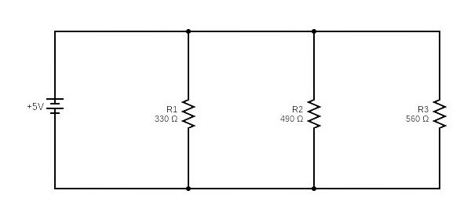
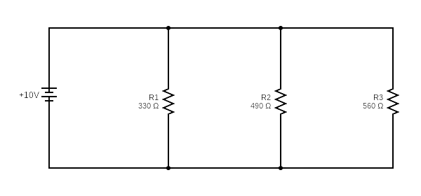

Assignment-02
Name of the Experiment: Verification of kirchhoff's Current Law (KCL)
| Elements | Unit |
|---|---|
| 1. Trainer Board | 1 Piece |
| 2. DC Voltage Supply | 1 Unit |
| 3. Resistors | 3 Piece |
| 4. Multimeter | 1 Piece |
| 5. Wires | As Required |
kirchhoff's Current Law (KCL) is based on the principle of conservation of charge which states that electric charge can nether be created nor destroyed. In any electrical circuit, the amount of charge entering a node must be equal to the amount of charge leaving that node. Mathematically, the net current entering a node is equal to the net current leaving it. For a node 'M', if I1and I4are entering and I2,I3andI5 is leaving. Then,
I1+I4=I2+
I3+I5
=>
I1+I4-I2-
I3-I5= 0
So, the algebraic sum of all currents at a node is 0;
∑I = 0;


- Use a multimeter to find the exact values of R1,R2 and R3and record them in table.
- Connect the circuit as shown in the diagram.
- Measure the supply voltageVsand the branch voltage (v).
- Set the multimeter to ammeter mode and measure the total current (I) and individual branch currents(I1, I2,I3)
- Check if the sum of branch currents (I1+I2+ I3) is approximately equal to the inflow current(I).